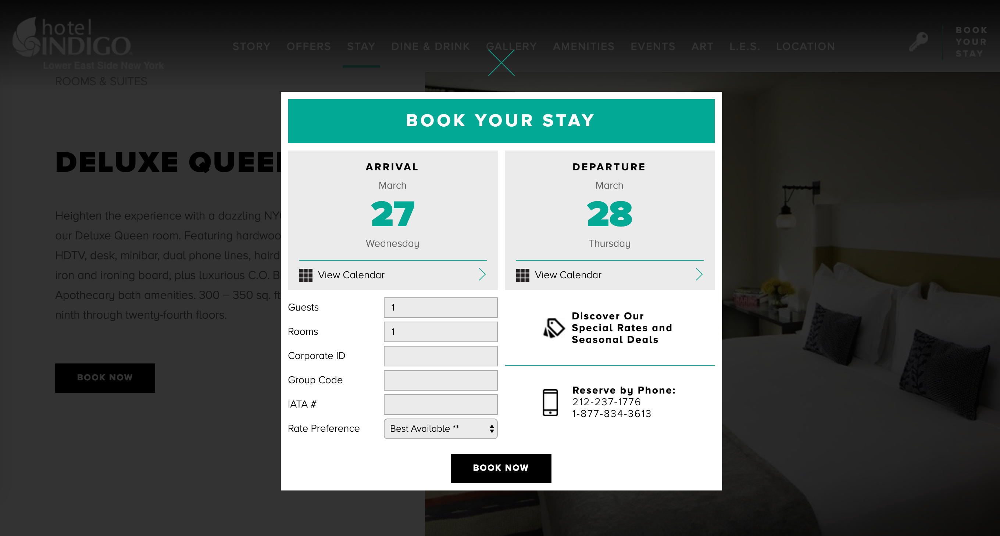
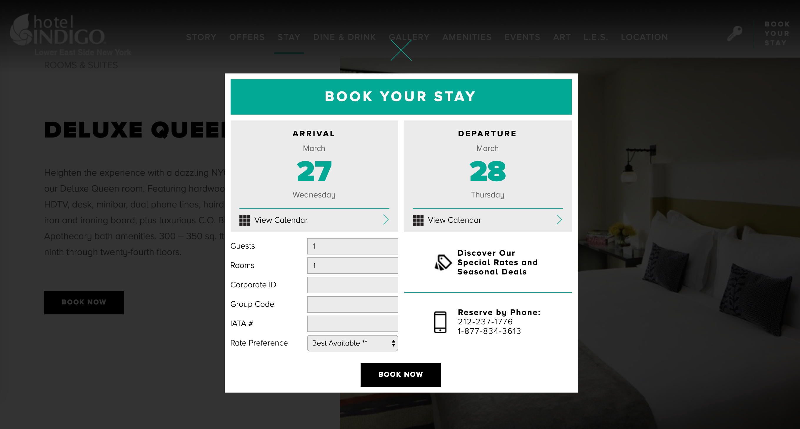

Overview
I was hired by Sitecast to help redesign the Booth Lake Landing Resort website. The original site, though perhaps modern in its day, was incredibly dated and in need of a makeover, both from a user interface and user experience perspective. It was crucial for the owner of Booth Lake Landing that the site reflect what she referred to as the “Northwoods aesthetic," allowing visitors to get a visual sense of the region as they explored the site to help them get a glimpse of the area’s beauty before stepping foot onto the resort.
Problem
The client wanted the visual design to have an app-like quality to it, which they believed would help modernize its look and feel. In addition to a UI overhaul, there was a need to build out a more straight-forward UX for the site’s cabin reservation process without relying on an online booking tool (the client still wanted to manage reservations via email).
Solution
I utilized design built upon components to mimic the app-like feel the client was after. I brought a sense of the Northwoods into the site by incorporating photos of the region into the backgrounds of every page, relying on a transparent layering effect to ensure as much imagery was visible as possible. I reimagined the contact and cabin booking process to help establish a straightforward user flow, making it easy for visitors to request a cabin reservation.
Team and Role
- Lead designer — myself
- Project manager — Rubie Gauthier
- Developer — Brad Gauthier
Research
The reservation process was most in need of an overhaul, so I did compentitive research and looked at reservation processes across other hotel and resort websites. The common elements I saw in the market, but found missing from the current Booth Lake site were the ability to access reservations directly from room detail pages, a calendar showing room availability directly on the room's information page, and a quick breakdown of room features and amenities.
 

Design
This project was a full top-to-bottom overhaul starting with redesigning the site's information architecture and sitemap, as well as a UI redesign and streamlining of its UX and user flows.
Sitemap
Wireframes
UX
On the Bookings page, I created a step-by-step process to walk users through reserving a cabin. Step one asks the user to select which cabin they’re interested in via a dropdown menu. Once selected, that cabin’s availability calendar and pricing information pops up with a second step requesting they select which dates they wish to visit. Step three is where users enter their contact information so Booth Lake Landing can connect back with them via email, collect their payment information, and finalize their booking.
To work in concert with the Bookings page, I consolidated all cabin information onto each cabin’s Overview page. This allows users to see all the relevant details about each cabin — photos, a description, and pricing information — as well as that cabin’s availability calendar, all from the same screen.
UI
My PM at Sitecast wanted to ensure the site had a modern, app-like feel. To accomplish this I incorporated layers, transparency, and shadows, as well as brought in design elements often used in mobile apps like modal overlays and forward and back buttons on pages, allowing users to navigate within the site (such as between individual cabin or activity overviews).
To incorporate regional photography per the client's wishes, I utilized photos with dark and light overlays for the majority of the backgrounds on each page, sometimes using multiple images to break up pages with clearly delineated sections. I played with transparency of site elements to allow the photography to show through as much as possible.
#3D4344
#F8FAFA

#1793C3
#2B9EB6/
#1793C3
Montserrat (Regular)
1234567890
ABCDEFGHIJKLMNOPQRSTUVWXYZ
abcdefghijklmnopqrstuvwxyz
MONTSERRAT (BOLD)
1234567890
ABCDEFGHIJKLMNOPQRSTUVWXYZ
abcdefghijklmnopqrstuvwxyz